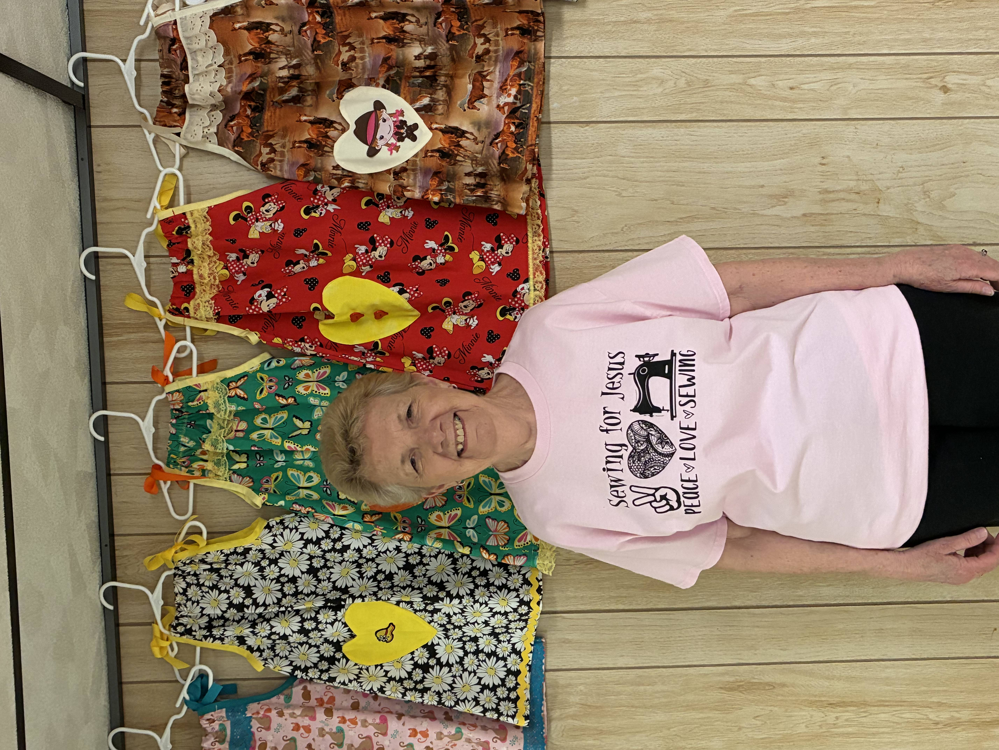

Our Story
A ministry of love, compassion, and service

Meet our Founder - Bev Breece
Started on March 25, 2016
Bev founded Sewing for Jesus in her basement. What began as a small act of faith has grown into a ministry that shares God's love one dress at a time.
Sewing for Jesus meets every Monday from 10:30 AM – 2:30 PM at Evangel Baptist Church in Taylor, Michigan. We're a dedicated group of volunteers who believe in the power of hands-on service.
We sew dresses for needy children around the world as well as here in the United States, pack them into Operation Christmas Child shoe boxes, and ship them to where they are needed. We welcome trades of items so everyone can pack shoe boxes and bless children everywhere.
All of us share the same purpose and a plan God has led us to: Showing God's love in a very special way. Whether you're an experienced seamstress or have never touched a sewing machine, there's a place for you! We provide materials, guidance, and fellowship.
Did You Know?
A new dress does more than clothe a child. It protects them. Traffickers often target children who appear neglected. A clean, beautiful dress signals that a child is loved and cared for, making them a less likely target.